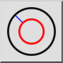
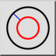
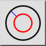
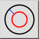

Концентрическая (с расстоянием)
Панель инструментов / Иконка:
 

Меню: Начертить > Окружность > Концентрическая (с расстоянием)
Горячая клавиша: C, C
Команды: circleconcentric | cc
Это автоматический перевод.
Панель инструментов / Иконка:
 

Меню: Начертить > Окружность > Концентрическая (с расстоянием)
Горячая клавиша: C, C
Команды: circleconcentric | cc
With this tool you can create one or multiple concentric circles with a given distance to an existing circle.